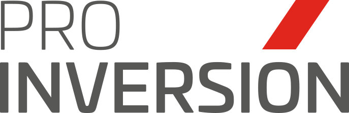

Seguimiento del Plan Operativo Institucional
Metas del POI por equipo, con la ejecución mensual reportada y su avance contra la meta anual.

Metas del POI por equipo, con la ejecución mensual reportada y su avance contra la meta anual.